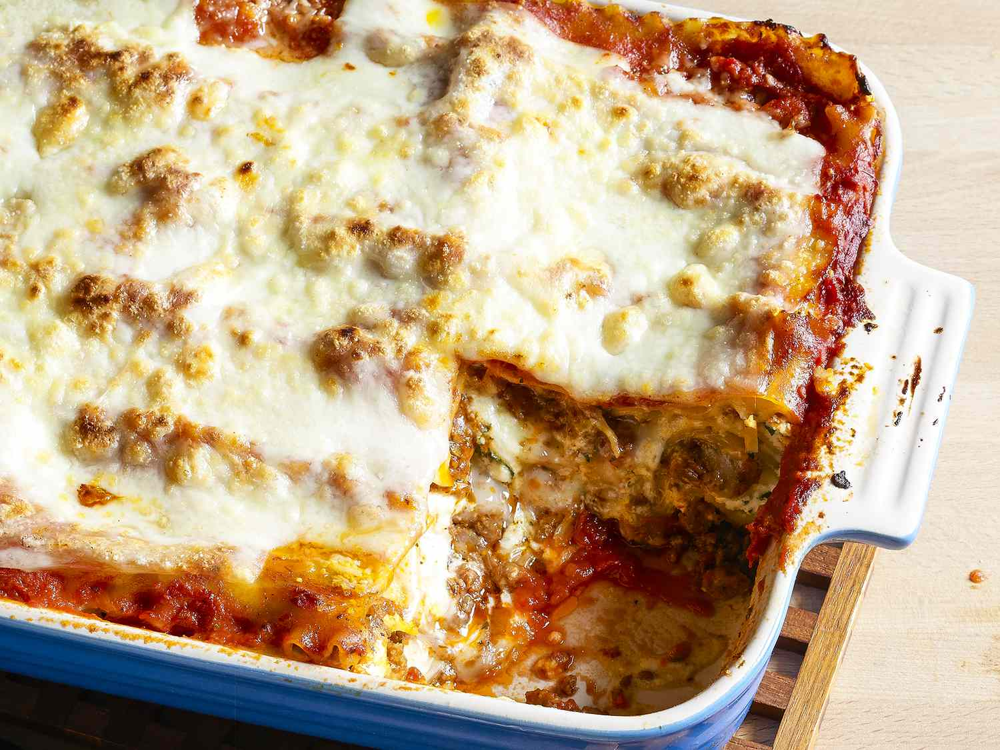

World's Best Lasagna

Ingredients:
Meat sauce:
- 1 pound ground beef
- 1 jar (24 ounces) marinara or pasta sauce
For the cheese mixture:
- 1 container (15 ounces) ricotta cheese
- 1 egg
For assembly:
- 9 lasagna noodles
- 3 cups shredded mozzarella cheese
- 1/2 cup grated Parmesan cheese
Instructions:
- Prepare the meat sauce:
- In a large skillet over medium heat, cook the ground beef until browned. Drain excess fat.
- Add the jar of marinara or pasta sauce to the browned beef. Simmer for 5-10 minutes.
- Prepare the cheese mixture:
- In a mixing bowl, combine the ricotta cheese and egg. Mix well.
- Cook the lasagna noodles:
- Bring a large pot of lightly salted water to a boil.
- Cook the lasagna noodles in the boiling water for 8 to 10 minutes.
- Drain and lay the noodles flat on a sheet of wax paper to prevent sticking.
- Assemble the lasagna:
- Preheat the oven to 375°F (190°C).
- Spread a thin layer of meat sauce in the bottom of a 9x13-inch baking dish.
- Place 3 noodles over the sauce.
- Spread 1/3 of the ricotta mixture over the noodles.
- Sprinkle with 1 cup of mozzarella cheese.
- Repeat layers (sauce, noodles, ricotta, mozzarella) two more times, ending with a layer of meat sauce.
- Sprinkle the top with Parmesan cheese.
- Bake:
- Cover with foil to prevent sticking.
- Bake in the preheated oven for 25 minutes.
- Remove the foil and bake for an additional 25 minutes, until the cheese is melted and bubbly.
- Let the lasagna cool for 10 minutes before serving.
Enjoy your simple, delicious lasagna!